2025.01.13
風玥茶研所多年來秉持職人精神探究史料
由凍頂茶區耆老記憶描繪
並與茶業改良場學者專家交叉梳理
不僅還原從武夷到凍頂茶品的脈絡
更敘述炭焙烏龍茶曾經的輝煌與未來
今周刊報導
2025.01.13
風玥茶研所多年來秉持職人精神探究史料
由凍頂茶區耆老記憶描繪
並與茶業改良場學者專家交叉梳理
不僅還原從武夷到凍頂茶品的脈絡
更敘述炭焙烏龍茶曾經的輝煌與未來
今周刊報導
2024.01.18
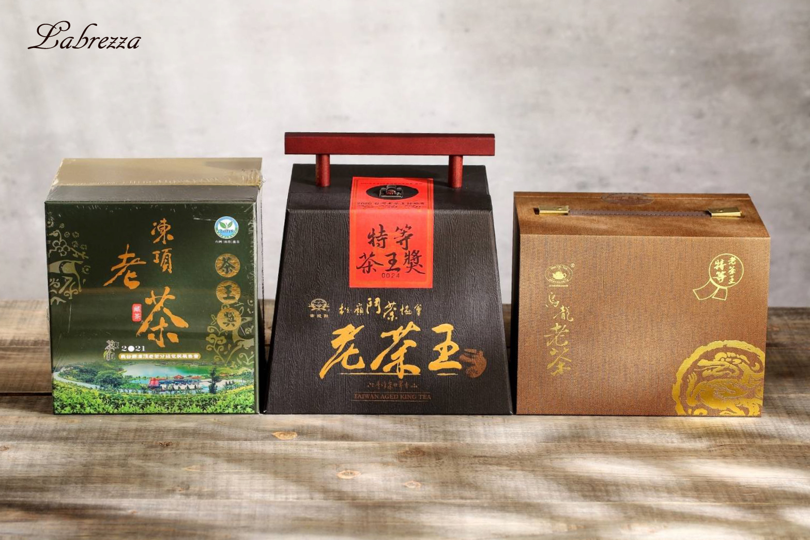
風玥茶研所 藏存之陳年烏龍茶品於同年度榮獲
南投縣松嶺鬥茶協會 特等老茶王獎
南投縣茶商業同業公會 凍頂老茶冠金獎
鹿谷鄉凍頂茶葉生產合作社 特等老茶王獎
冠軍稱霸台灣三大陳年老茶評鑑賽場
今周刊報導
2023.01.10
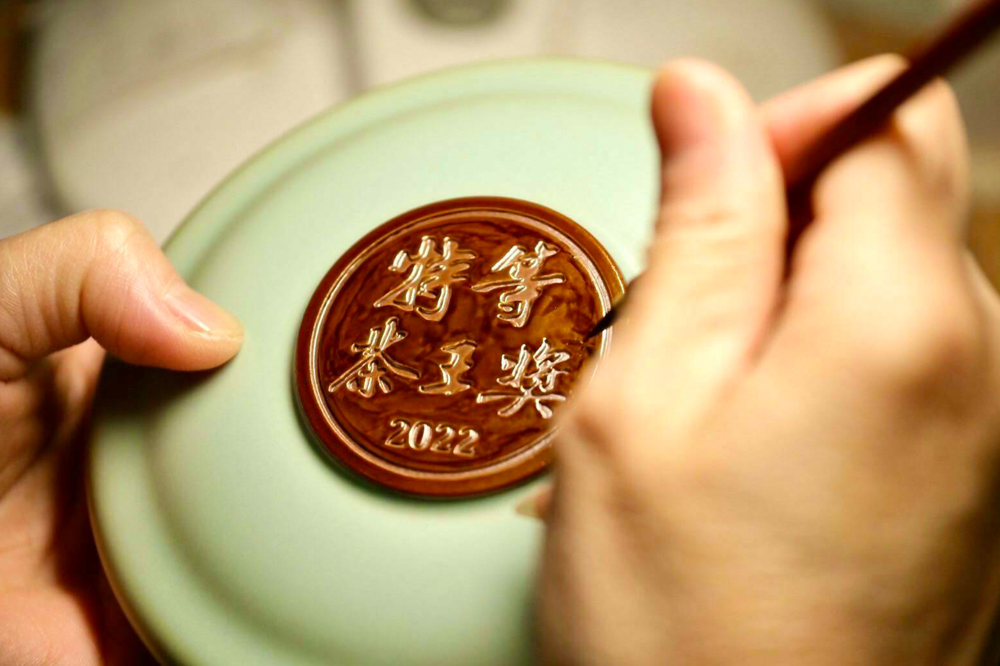
陶藝和茶界頂尖職人台灣首例「精品級」藏茶聯名
「陶作坊」與「南投縣松嶺鬥茶協會」攜手
將2022年度炭焙烏龍競賽茶品
盛裝於特製限量懷汝茶罐以經典成就非凡！
自由時報報導
2022.11.24
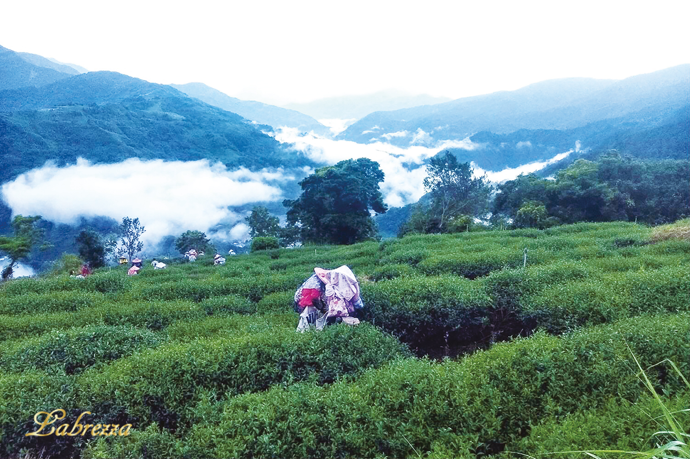
風玥茶研所除了台灣茶產製銷之外
更提供企劃、設計…等多元服務項目
不斷創新營銷思維將茶葉化為生活提案
精確預測產業趨勢，將發展性最大化
今周刊報導
2022.04.25
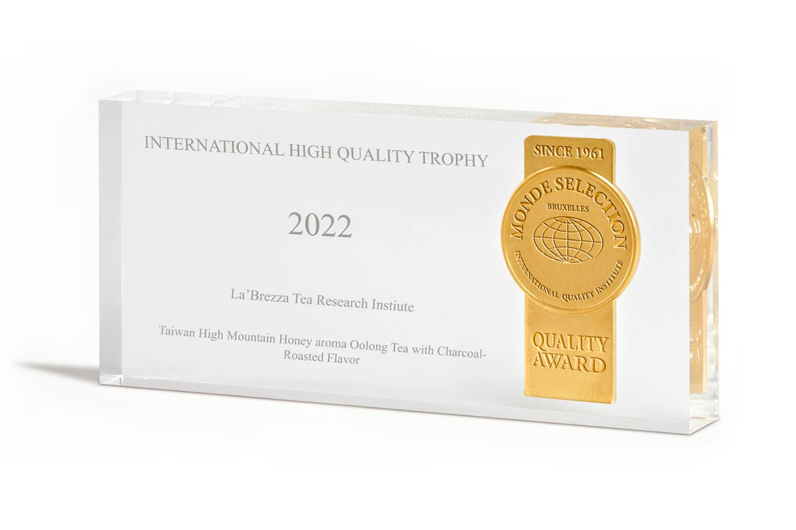
風玥茶研所 產製的「高山蜜香烏龍茶」
不僅於凍頂茶葉生產合作社連奪五年金牌獎
亦曾獲中國第四屆亞太茶茗最高獎項特別金獎
今年更於Monde Selection蟬聯三次金獎
同時獲頒國際高品質獎盃於世界舞台大放異彩
經濟日報報導
2022.01.19
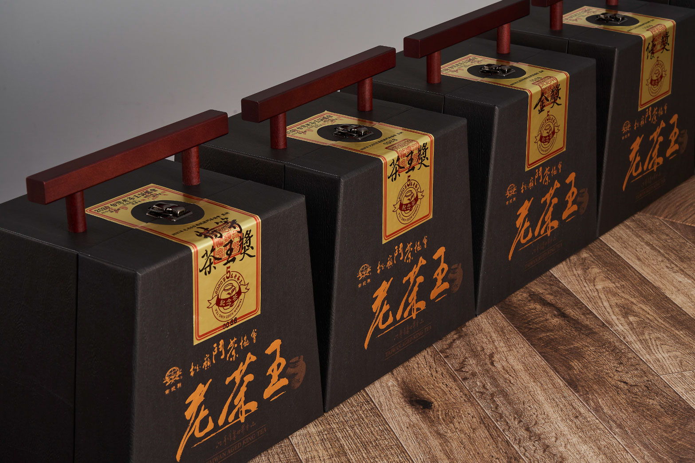
南投縣松嶺鬥茶協會茶葉品質鑑定競賽
辦理至今已邁入二十年
與國家茶業改良場專家共同訂定評鑑標準
進行每年度的競賽茶評審
日前得獎名單日前出爐
今周刊報導
2021.12.10
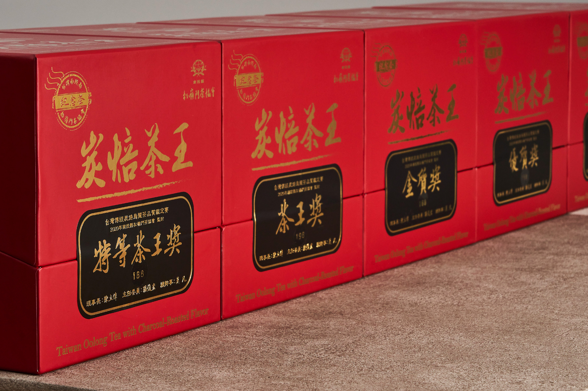
風玥茶研所致力復刻經典工藝
與南投縣松嶺鬥茶協會共同推廣傳統炭焙烏龍茶
至今已連年舉行三屆評鑑競賽
最終特選的茶葉品質與獨特風味
受各界熱烈迴響、珍藏風潮更是遠流國際
今周刊報導
2021.12.04
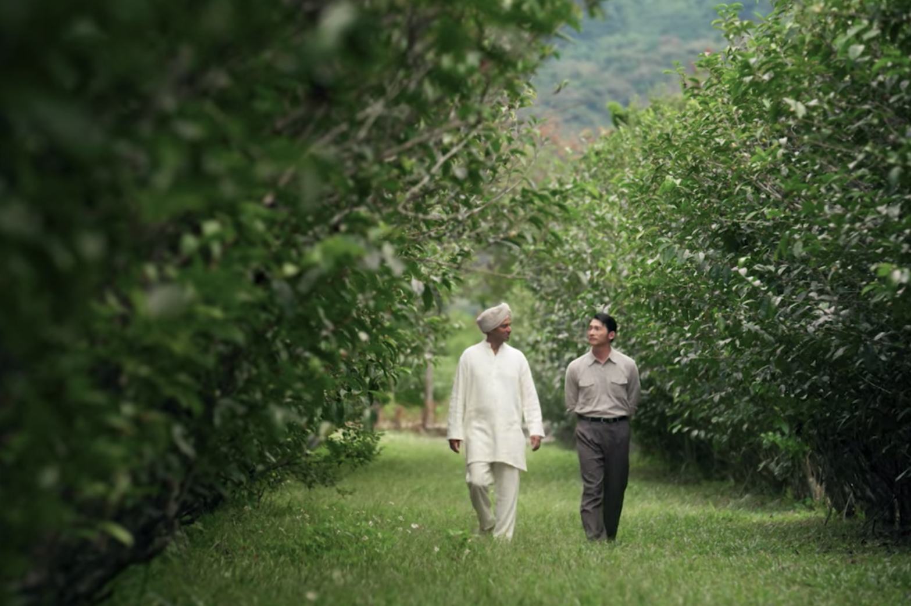
公視時代劇《茶金》為了拍攝最美的畫面
劇組可謂全台走透透
除了於花蓮文創園區的「日光」總公司之外
其實還有一個未公開的茶園場景
位在台東這處「原始秘境」！
自由時報報導
2021.11.14
台灣時代美劇《茶金》真實歷史取材
還原50年代台灣茶外銷的燦爛風貌
但其實台灣茶產業不只《茶金》時期才風光
風玥茶研所受邀自由時報專訪
分享六段台灣茶產業黃金歲月篇章
自由時報報導
2021.08.07
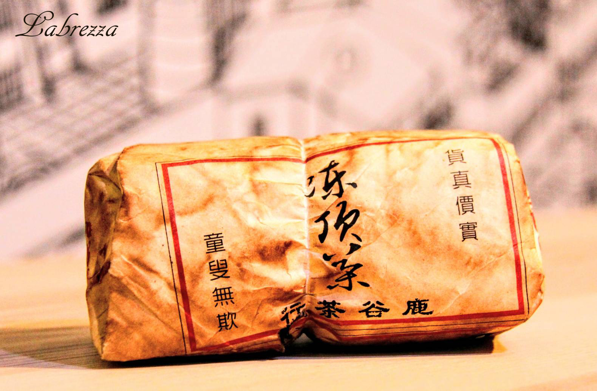
投資藝術品、古董老件不稀奇！
藏茶如藏金 揭開台灣陳年烏龍茶珍藏奧秘
風玥茶研所 受邀自由電子報專訪
三千字精華深入探索如何 “點茶” 成金
2021.06.23
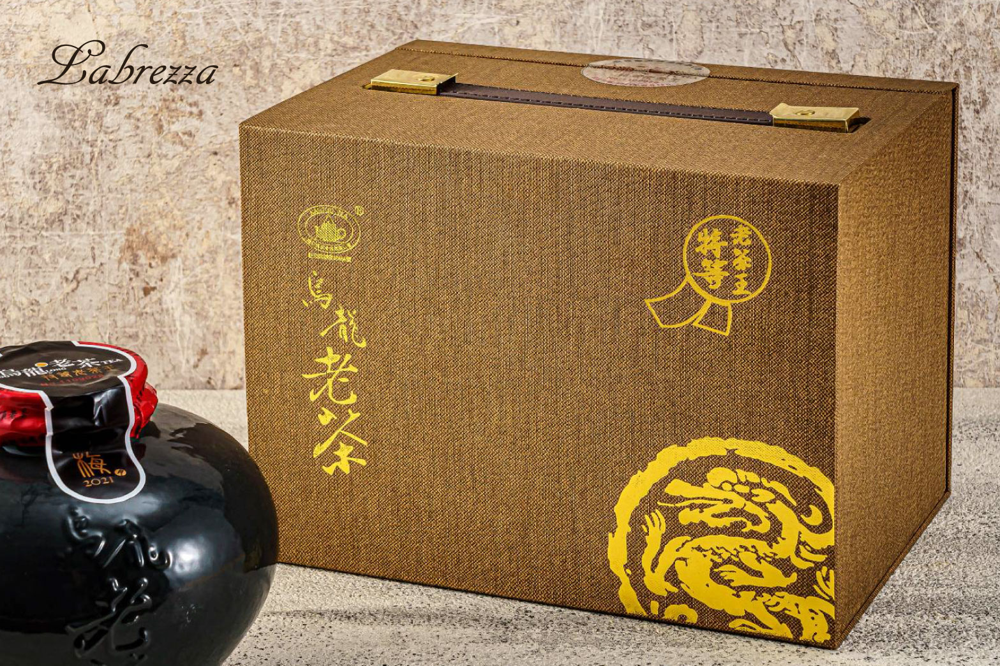
風玥茶研所 藏存數款逾三十多年的陳年烏龍茶
參與多場台灣陳年茶賽事
憑藉香濃醇厚、尾韻陳香盈口的迷人特質
四度奪冠深受專業評審與茶產業界人士肯定
2021.06.11
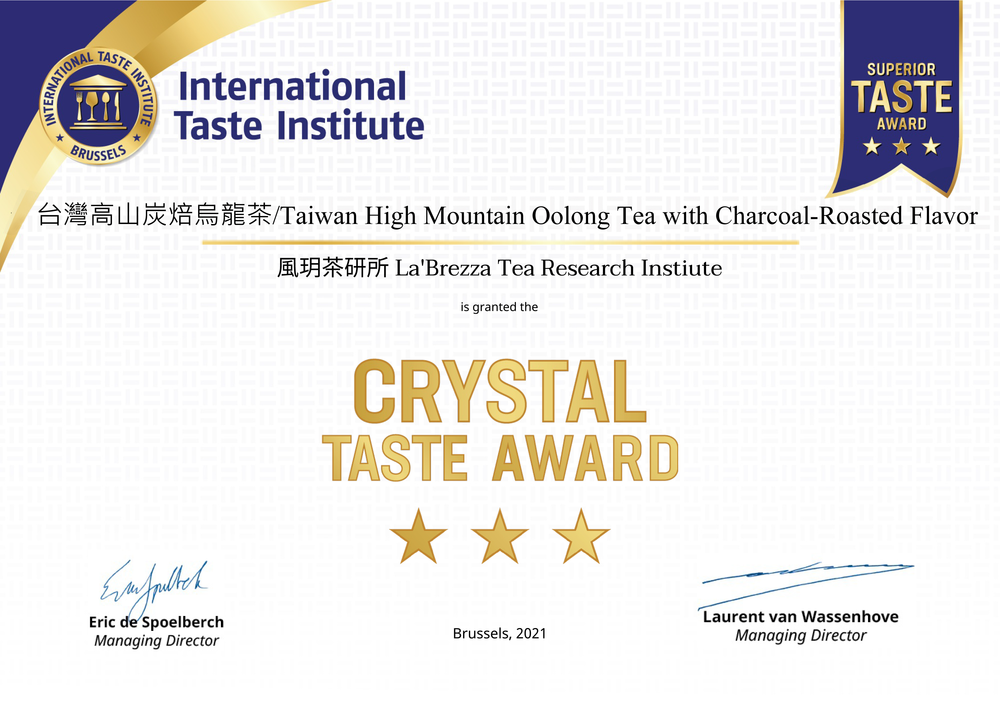
「風玥茶研所」依循傳統工藝
精製而成的台灣高山炭焙烏龍茶
繼2019年首度評鑑至今
連續三年蟬聯「極致三星獎」
憑藉精湛穩定的茶品質量
於2021年獲頒「水晶獎」
2021.05.07
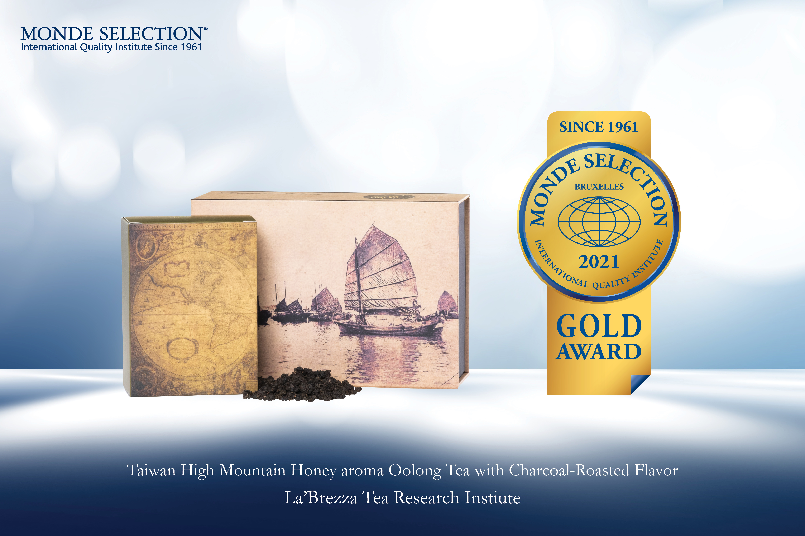
風玥茶研所 產製的台灣高山炭焙蜜香烏龍茶
憑藉獨特「精工烘焙風格」
於今年再次蟬聯世界品質評鑑大賞金質獎
品質與禮盒精緻程度皆獲高度讚賞
2021.04.30
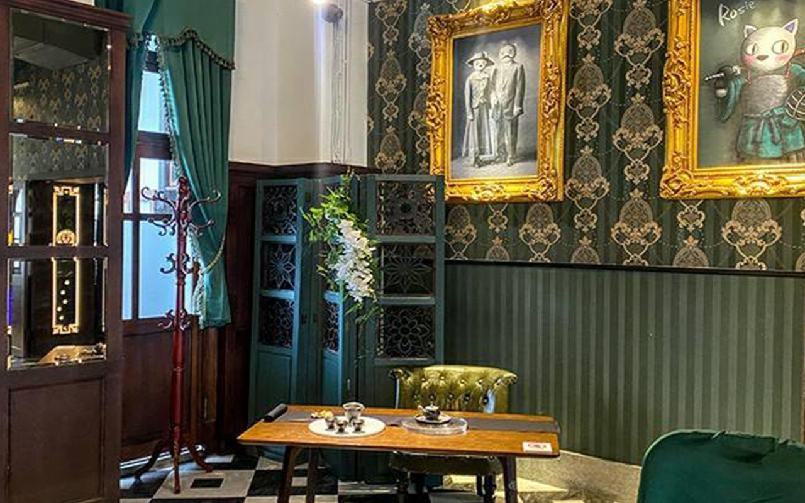
南投縣松嶺鬥茶協會＆ 南投稅務出張所
以東方茶與西方新古典建築風格結合
將花藝佈置、茶器美學、茶湯品飲
以及作家論談、簽書留念
藉由五感融合傳遞出新茶香文化的美好
舉辦此場"泡壞了的茶湯"簽書茶會
呈現出意想不到的火花